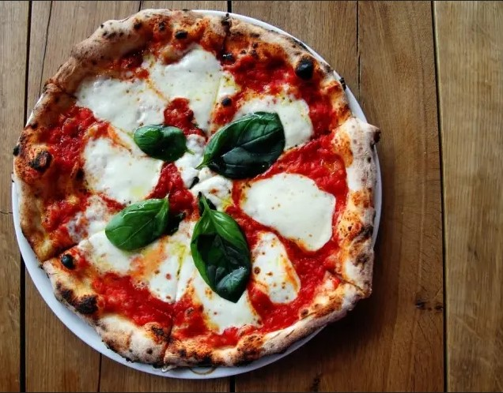
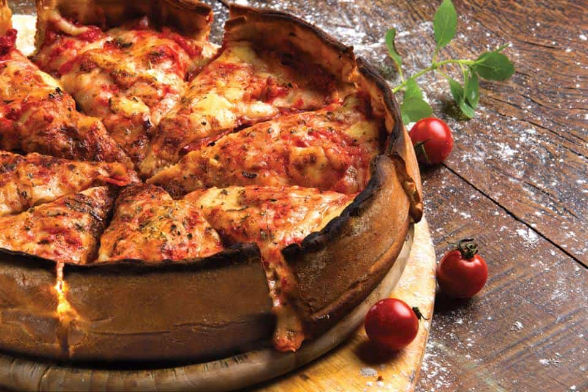
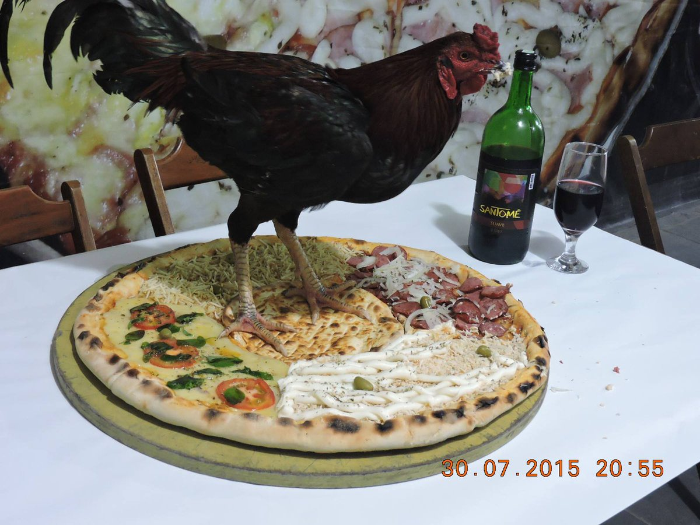

Começando nossa série de comidas famosas, está é uma que está no topo da lista quando pensamos em comidas populares. Famosa no mundo inteiro, a pizza é algo comum ao paladar brasileiro, por isso todo bairro tem suas pizzarias.
Pizza é uma preparação culinária que consiste em um disco de massa fermentada de farinha de trigo, coberto com molho de tomate e os ingredientes variados que normalmente incluem algum tipo de queijo, carnes preparadas ou defumadas e ervas, normalmente orégano ou manjericão, tudo assado em forno. Porém há várias opções de recheio e preparo, tornando uma comida muito versátil.
No Brasil existe uma expressão muito famosa, que é algo "Acabar em Pizza". Terminar em pizza é uma expressão usada para se referir a uma situação que não foi solucionada e ficou da mesma maneira que começou. Pode se referir a situações de impunidade, quando alguém não é responsabilizado por um ato grave que tenha cometido.
Tradicional
Maneira tradicional de se preparar um pizza. É basicamente a massa, o molho de tomate, o queijo, tomate e orégano.
 Um clássico indiscutível.Chicago Style
Esta é uma é uma pizza preparada de acordo com vários estilos diferentes desenvolvidos em Chicago. A mais famosa é a pizza de prato fundo. Não é muito difundida aqui no Brasil.
 Famosa pizza Chicago Style.Pizzaria Batepapo
Este é o resultado de quando alguém resolve inovar e sair totalmente do padrão. A pizzaria Batepapo fica localizada no Guarujá, e sua propósta é fazer pizzas de tamanhos maiores dos que os convencionais, além de uma variada gama de sabores. Rapidamente ganhou seu lugar de destaque por desafiar toda e qualquer lógica na hora de criar seus pratos, onde qualquer coisa pode acabar em cima de uma de suas pizzas.
 As pizzas de lá são, digamos... inusitadas?.